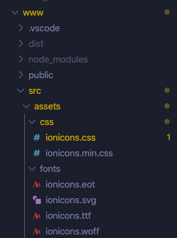

How to use ionicons in Devextreme Vuejs
ionicons 홈페이지
Environments
- Devextreme Vuejs Project
- Devextreme Vue Template
단계
Download ‘Designer Pack’
ionicons 홈페이지에 오른쪽 상단에 보면 Designer Pack을 다운로드할 수 있음.css/ font/ 폴더를 vuejs 프로젝트의 assets/ 폴더 아래 붙여넣는다.

main.js에 css를 import 한다.
1
import './assets/css/ionicons.css';
npm run build 또는 npm run dev(serve)
사용하기
devextreme-vue-template/app-navigation.js 에서 icon 부분을 다음과 같이 변경한다.
1 | export default {[ |